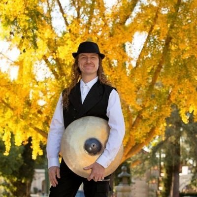

Drums · Percussion
David Bown
Drum instructor and co-owner of Music Lessons Central. David has taught students from age 2 to retired seniors, and he prepares every one of them to play in any style or setting.
About David
David has consistently had a busy roster of students of all ages, skill levels, ethnicities and temperaments. Over the years that has included some great people with blindness, autism, dyslexia, ADHD, bipolar disorder, multiple sclerosis and epilepsy.
As a drummer, one of his goals has always been to be well rounded and able to play in a variety of musical settings and styles. As a teacher, his goal is to prepare his students for the same. He teaches reading music, coordination, music theory, a solid sense of tempo and much more.
Dave has found music to be the foundation for many good life skills: patience, problem solving, concentration, memory, teamwork, time management, perseverance and self-esteem. If you're looking for a drum teacher who loves sharing the gifts of music while having some fun, David has the dedication and experience you're looking for.
Teaching & performing
M.U.S.I.C. program
Taught drums for three years at a school for children of the homeless, a CSUSB and Children's Fund project. Co-Project Director, 1999–2000.
National Guitar Summer Workshop
On-site drummer and teacher for two summer workshops, at USC and Loyola Marymount University.
Theater & festivals
Godspell, Rocky Horror Show, Seussical and more. 15 years as the “Queen's Drummer” at the Renaissance Pleasure Faire, plus the Rheinlanders polka band at the Pomona Fairplex Oktoberfest.
Studio & stage
On-call studio drummer. His original bands have shared bills with Blue Öyster Cult, Kansas, Lynch Mob, Armored Saint, Missing Persons and more.
The road here
Elementary school
Started drums at age 9. Chosen for the All-City San Bernardino Elementary Honor Band.
Junior high
Jr. High All-City All-Star Jazz Band, All-City Jr. High Honor Band and San Bernardino County Honor Band. Already playing in the San Bernardino Valley College Band.
High school
All Southern California Honor Band. N.A.J.E. “Outstanding Soloist.” Snare line in Pasadena City College's Rose Parade Band. First paid gig: Godspell at UC Riverside. Youngest-ever member of the RCC Marching Tigers, touring Japan for the All Japan Marching Band Competition.
College
Marched with the Tigers at Honolulu's Aloha Festival, then earned his Associate's degree at San Bernardino Valley College.
1997
After nine years at Lier's Music in San Bernardino, co-founded Music Lessons Central.
Places performed
…and many, many more across Southern California, Hawaii and Japan.
“I am also just beyond thrilled at the progress my son has made, both in skill development, but also in the confidence that's accompanied his transition from beginner to someone who can read and play complicated music.”
“He lives and breathes drumming, eats it for breakfast and has the skills to pass his craft on to others.”